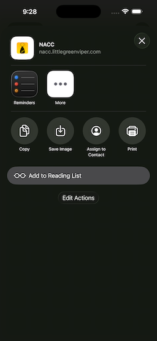
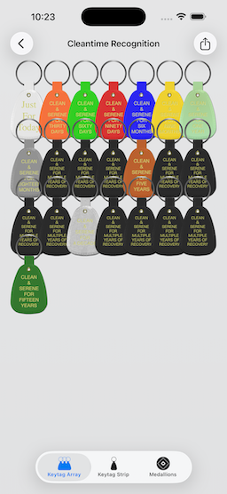

View on GitHub
View on GitHub
NACC (NA Cleantime Calculator)
Overview
This is a simple “cleantime calculator” app, for NA members (It is not associated with Narcotics Anonymous World Services, or NA, as a whole. It is simply a tool, written for NA members, by NA members).
Get The App
Get the application, itself
| The app is available for free, from the iOS/iPadOS/MacOS Apple App Store |
|---|
Get the source code
| The Source Is Available, As MIT-licensed Open-Source Code, on GitHub |
|---|
Read All About It
Complete User Documentation is Available on the Little Green Viper Software Development LLC Web Site
Basic Operation
The Initial (“My Cleantime”) Screen
The initial screen that you see, upon starting the app, has a basic “cleantime report” text button. If you select it, a date picker will appear, allowing you to enter a cleandate. Once you have entered a date, the report updates to reflect the new cleandate.
| Figure 1: The Initial Screen | Figure 2: Dark Mode |
|---|---|
 |
 |
Setting A Cleandate
| Figure 3: The Date Picker | Figure 4: Dark Mode |
|---|---|
 |
 |
Note
On some screens, or if the device is rotated, the date picker may show up as “wheels.”
| Figure 5: The Picker As “Wheels” |
|---|
 |
The app remembers the last date entered.
| Figure 6: After Changing the Date | Figure 7: Dark Mode |
|---|---|
 |
 |
Sharing Your Cleandate
Selecting the “action” button (upper left of the Initial Screen) will allow you to share the report with others, using different apps, like Messages, or Mail, or print out the report.
Upon first selecting the button, you will be presented with an alert, asking you to select what you wish to do.
| Figure 8: The Action Selection Alert | Figure 9: Dark Mode |
|---|---|
 |
 |
Sharing Your Cleantime
If you select “Share My Cleantime,” you will be presented with a classic Share Sheet.
| Figure 10: The Share Sheet | Figure 11: Dark Mode |
|---|---|
 |
 |
This will include a Universal Link to the report. This link will either take you to a Web page, showing keytags, or will open the app, setting the date.
Here is an example (https://nacc.littlegreenviper.com/?2010-03-17)
If you have the app, it will open the app, and set the date to March 17, 2010. If you do not have the app, it will take you to a Web page, showing a keytag strip, denoting the cleantime, and with links to the app in the App Store.
Printing the Report
If you select “Print My Cleantime,” you will be presented with a Print Screen.
| Figure 12: The Print Screen | Figure 13: Dark Mode |
|---|---|
 |
 |
| Figure 14: The Print Preview |
|---|
 |
Setting a Calendar Event
Selecting the “calendar” button (just to the right of the Action Button) will allow you to create calendar reminders, every year, starting from the cleandate.
It will “pre-populate” an event, with the date as an “all day” starting date, and yearly repeats.
| Figure 15: The Calendar Entry Screen | Figure 16: Dark Mode |
|---|---|
 |
 |
The App Information Screen
Selecting the “Info” button (upper right of the Initial Screen) will bring in a screen, displaying information about the app.
| Figure 17: App Information Screen | Figure 18: Dark Mode |
|---|---|
 |
 |
The three buttons along the bottom will take you to the app settings panel, in the device’s Settings app, the Web site Privacy Policy Page (in Safari), and the main Little Green Viper Software Development LLC Web site, respectively.
The Cleantime Commemoration Tab Screen
If you select the cleantime report, it will bring in another screen, that will have three tabs. These tabs will display the cleantime, using keytags or medallions.
If you have entered a date less than 1 year in the past, then the Medallions tab is not available.
| Figure 19: Keytag Array Tab | Figure 20: Dark Mode |
|---|---|
|  |  |
| Figure 21: Keytag Strip Tab | Figure 22: Dark Mode |
|---|---|
 |
 |
| Figure 23: Medallion Array Tab | Figure 24: Dark Mode |
|---|---|
 |
 |
Selecting the logo (above the report) will take you to the Keytag Array Tab.
Selecting the keytag/medallion (under the report) will take you to the results as either medallions, or as the array of keytags.
If you select the action button, you will now be able to print the display, share it (and the report), via Messages, or Mail, or save the image into your Photo Library.
URL Scheme
The app can be opened from other apps (like Safari or Mail), using a special URL scheme.
The URL scheme is thus:
nacc://[?YYYY-MM-DD[/N]]
The Universal Link Scheme is:
https://nacc.littlegreenviper.com/[?YYYY-MM-DD[/N]]
YYYY-MM-DD is a standard ISO 8601 calendar date (For example, September first, 1980, is 1980-09-01).
The earliest date is October 5, 1953 (1953-10-05)
N is the numerical index of a tab:
- 0 is Keytag Array
- 1 is Keytag Strip
- 2 is Medallions
| Figure 25: URL Entry In Safari | Figure 26: Permission Alert |
|---|---|
 |
 |
Example URL Scheme URLs
(Will only work on a device with NACC installed)
nacc://This opens the app, but does nothing else.nacc://?1980-09-01This opens the app, and sets the cleantime to September 1st, 1980. It will set to the main screen.nacc://?2020-03-17/0This opens the app, and sets the cleantime to March 17th, 2020. It will open the commemoration tab screen, to the Keytag Array tab.nacc://?2020-03-17/1This opens the app, and sets the cleantime to March 17th, 2020. It will open the commemoration tab screen, to the Vertical Keytag Strip tab.nacc://?2020-03-17/2This opens the app, and sets the cleantime to March 17th, 2020. It will open the commemoration tab screen, to the Medallions tab.
Example Universal Link URLs
Will work on any device, but will open the NACC, if it is installed. If not, a simple Web page with the date will be shown, along with instructions for accessing the app on the App Store
https://nacc.littlegreenviper.comThis opens the app, but does nothing else.https://nacc.littlegreenviper.com/?1980-09-01This opens the app, and sets the cleantime to September 1st, 1980. It will set to the main screen.https://nacc.littlegreenviper.com/?2020-03-17/0This opens the app, and sets the cleantime to March 17th, 2020. It will open the commemoration tab screen, to the Keytag Array tab.https://nacc.littlegreenviper.com/?2020-03-17/1This opens the app, and sets the cleantime to March 17th, 2020. It will open the commemoration tab screen, to the Vertical Keytag Strip tab.https://nacc.littlegreenviper.com/?2020-03-17/2This opens the app, and sets the cleantime to March 17th, 2020. It will open the commemoration tab screen, to the Medallions tab.
Watch App
The iOS app has a companion Watch app, with complications.
Dependencies
The app is dependent upon the following 4 Great Rift Valley Software Company SPM modules:
It is also dependent upon the following 2 Little Green Viper Software Development LLC SPM modules:
License And Copyright
The code and keytag images are MIT license. Use them as you will.
However, the medallion images are renderings of the standard bronze NA World Services (NAWS, Inc.) cleantime commemoration medallions. The design of those medallions is copyrighted by NA World Services.
It is important to treat the intellectual property of NA with respect.